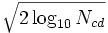

Das rauschende Signal wird zuerst in mehrere Sätze Approximationskoeffizienten und Detailkoeffizienten mit Hilfe der mehrstufigen 1D-Wavelet-Zerlegung zerlegt. Dann werden alle Detailkoeffizienten, deren absolute Werte kleiner sind als der Schwellenwert, verworfen. Zum Schluss werden die Approximationskoeffizienten und die geänderten Detailkoeffizienten verwendet, um das Signal zu rekonstruieren.
Die mehrstufige 1-D-Wavelet-Zerlegung ist ein Prozess der aufeinander folgenden Zerlegung der Approximationskoeffizienten. Angenommen nLevel sagt aus, wie viele Male die Zerlegung durchgeführt wird. Wir berechnen nLevel dann als: nLevel = min(7,log2N) ,
wobei N die Länge des Eingabesignals ist.
Die Bestimmung des Schwellenwerts wird nur bei den Detailkoeffizienten der letzten Stufe l durchgeführt, wobei l von der Option Stufe mit Schwellenwert festgelegt wird. Die Werte dieser Koeffizienten werden dann untersucht. Die Koeffizienten, deren absolute Werte kleiner sind als der Schwellenwert, werden von Nullen ersetzt.
Wenn der Schwellenwerttyp sqtwolog ist, wird die Stufe des Schwellenwerts berechnet mit: